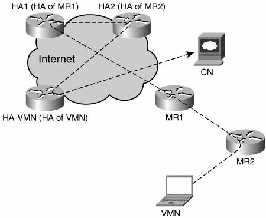

Next Steps in MobilityAlthough RFC 3775 is a significant step in defining the main concepts and aspects of mobility, some applications, such as Voice over IP, require additional functionalities. These functionalities, such as faster movement detection and smoother handover, deal with the time-sensitive aspects of certain applications and services. Forthcoming EvolutionsWorking groups at IETF and IEEE are already working on a number of additional features that would be required to support certain applications (Triple Play, for example) and use cases (aviation, cars). This section elaborates on the hottest mobility-related topics currently considered by the standards bodies. Faster RoamingIt is well known that mobility is widely deployed today for voice applications and most if not all based on layer 2 roaming. IP mobility is not even a niche market. Some studies for the fourth-generation voice network, however, consider Voice over IP and IPv6 mobility for their core technologies. To meet the seamless handover requirement demanded by interactive applications, a mobile node needs to perform its network attachment detection and its access router selection within 50 to 100 ms after the roaming took place. IPv6 is leading the way with make-before-break approaches such as Fast MIP (see RFC 4068) and Context Transfer Protocol (CTP). Proactive techniques for smoother handover, better interaction with layer 2 for movement detection, additional advertisements for access router selection, mobile and correspondent routers, and regional and local mobility are actively being addressed by several working groups at the IETF. Part of the handover problem is the lack of interaction between the layer 2 and the layer 3; the Ethernet abstraction, emulated by 802.11, was not designed to support hosts moving around. As a result, the layer 3 is not informed when a layer 2 roaming occurs and cannot take actions in due time. Several transient solutions based on layer 2 triggers and SNMP traps have been proposed. Layer 2 and layer 3 triggers are being defined at the IEEE 802.21 working group. Movement DetectionTraditional routing and bridging were not designed for mobility: Transparent bridging states are, by design, slow to establish, to avoid the meltdown syndrome, loops forming in the bridged fabric with no TTL to terminate them. In addition, most routing protocols will collapse if the links flap and the nodes change their points of attachment without due announcement. Moreover, because the 802.11 radio interface is inherited from Ethernet, there is no provision for mobility-related API, and a layer 2 roaming operation often occurs unbeknownst to the network layer. MIPv4 proposes a layer 3 movement detection based on the ICMP Router Discovery Protocol (IRDP) messages beaconed by the foreign agents as MAC layer broadcast. Similarly, MIPv6 extends the Router Advertisement messages to detect the network attachment as quickly as possible in a generic layer 3 fashion. Neither technique, however, offers a handover time that would make roaming transparent to voice applications. To adapt to mobility, a node must first detect when movement occurs, control it if possible, and then act on the movement to restore the connectivity. With IPv6, a number of means have been introduced at the network layer to detect the movement, and making this detection as fast as possible is the goal of the activity at the IETF Detecting Network Attachment (DNA) working group. Attachment Router SelectionWhen a movement is detected, or if new information is obtained about the routers available in the vicinity, a mobile node might roam. The mobile node selects the new attachment router as its default gateway and it autoconfigures a new address from a prefix advertised by that router. Mobile routers can attach to one another and form a shallow tree rooted in the infrastructure, called a nested NEMO. Additional layer 3 information is needed to avoid loops and optimize metrics such as depth in the resulting structure. This information should also indicate the capabilities by the potential attachment router in term of reachability (for instance, whether it is connected to the Internet). Internet Draft draft-thubert-tree-discovery proposes a generic algorithm based on autonomous decisions by each mobile router for building loopless nested NEMO structures. Integration with Mobile Ad-hoc NetworkingExtensive work has already been performed, in the Academia, and within the MANET working group at the IETF and IRTF, around mobile ad-hoc networking. As opposed to MIP, which focuses on a node that changes its point of attachment around the Internet, the goal here is to allow a local communication between unrelated nodes using their persistent global addresses. A number of experimental standards have been published already, but none widely deployed. MANET is now working on standard track solutions, such as OLSRv2 and DYMO. A MANEMO group is being created to define the MANET for NEMO that would optimize the local reachability while preserving the global reachability. A smooth integration of MANET and NEMO technologies can enable applications such as nested NEMO and mesh networking. MultihomingA home agent might want to check whether an MNP is registered by a unique mobile router, which, if the HoAddr is constructed out of the mobile prefix, ensures that a HoAddr is unique. But, it might be desirable, for redundancy reasons, that two mobile routers share an ingress link, and both register a same prefix at the same time, with different HoAddrs, guaranteed unique by the DAD mechanism on the shared ingress link. How can the home agent make sure that they are actually connected, and more so, that they keep moving as a group and never split? What would happen if they did? How does the home agent balance the traffic to the MNP over the two available tunnels? It might happen as well that home itself is multihomed, causing the mobile router to support more then one prefix; this problem is quite analogous to the traditional site multihoming. Also, a mobile router might want to maintain more than one tunnel with, maybe, more than one home agent and form multiple CoAs. There are, in fact, more scenarios with NEMO multihoming than with site multihoming, which is not an easy problem by itself. This is why the MULTI6 working group at the IETF rejected explicitly to consider the multihoming problems related with mobility, which is now being handled by the MONAMI working group. Route Optimization for NEMOFigure 8-14 illustrates a nested NEMO configuration with a visiting mobile node (VMN) attached to a mobile router (MR2) itself attached to mobile router MR1. Figure 8-14. Route Optimization for NEMO The VMN might be a visitor's laptop, used from inside a rental car in a large parking lot of a supermarket. In that example, packets need to be relayed by a mobile router in another car, to the access point, which is out of direct reach. By means of the NEMO basic support, MR1 establishes a tunnel with its home agent (HA1) and installs its default route over that tunnel, and so does MR2 with HA2. As a result, MR1 encapsulates all packets from MR2 and sends them to HA1. And finally, by means of MIPv6, VMN establishes a tunnel with its home agent (HA-VMN) and installs its default route over that tunnel. As a result, to reach a supermarket that is two 802.11 hops away, all the packets from VMN are encapsulated a first time by VMN itself, then by MR2, and then by MR1. Hence, each packet sent by VMN carries four IPv6 headers! Consider a Voice over IP application using an 8-Kbps codec such as G.729a and taking a voice sample every 20 ms, with a transmission rate of 50 packets per second. Each additional IPv6 header is an extra 16 Kbps, which is twice the actual payload. It may happen that MR1's home network is located at the other end of the country, and that the visitor lives on the other side of the ocean. As a result of the outer encapsulation, all packets cross the country, are decapsulated by HA1, and then come back a few blocks away, are decapsulated by HA2, and then cross the Ocean, are decapsulated by HA-VMN, to finally come back to the supermarket, in line of sight of the visitor. The latency incurred by this absurd travel is incompatible with voice communications. This effect is called pinball routing, a packet bouncing across the Internet, for home agent to home agent. For a larger packet, the three levels of encapsulation might cause a fragmentation, and if by chance one fragment is lost, the rest of the packet makes it all the way to be finally lost in the reception buffers. The NEMO working group is producing a problem statement for its RO. It will recharter to actually focus on that specific problem, spinning off MANEMO for MANET integration and MONAMI for multihoming. A VisionInitially, the so-called "mobiquity" will be mostly about mobile routers and nodes forming trees to reach the Internet. But, inner connectivity within that fringe will also be required to sustain local applications, as long as the appropriate services to locate the persons and the services are deployed in the vicinity. With the emergence of millions and then billions of interconnected devices, we might be on the eve of pervasive networking, a vision for the Internet where every person and every device is connected to the network in the ultimate realization of Metcalf's law. When this happens, the Internet landscape might no longer look like anything familiar. Pervasive networking requires a new model to scale the Internet, which could start with self and group-centric abstractions of the network overlaid on the current IP infrastructure, and enabled by NEMO RO. It means self-centric nodes, with little to no configuration, and no prior knowledge of the transient peerings they might establish and use over time, in some tit-for-tat, anonymous and innocuous cooperation. It means nodes enjoying an unrestricted mobility over wireless connectivity, always reachable by the precious few with the relevant needs and rights. It means atomic networks, with all the necessary application support, merging and splitting dynamically, interconnecting logical administrative domains within and in between the mobile nodes. And more . . . |